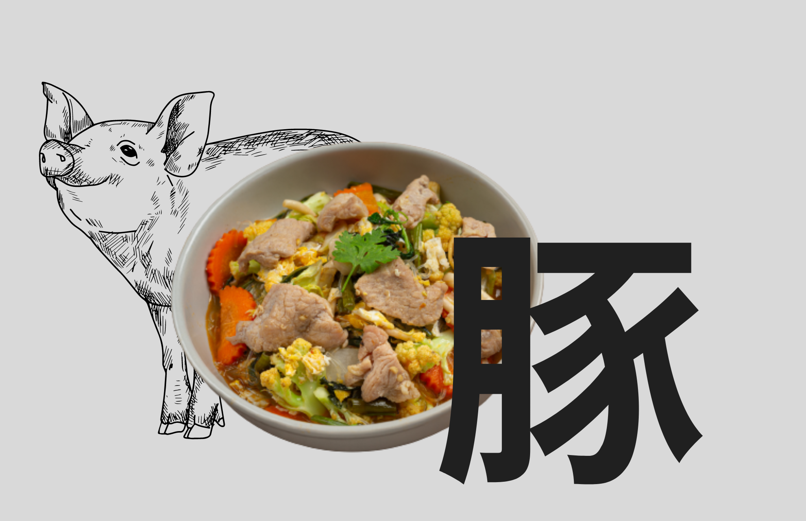
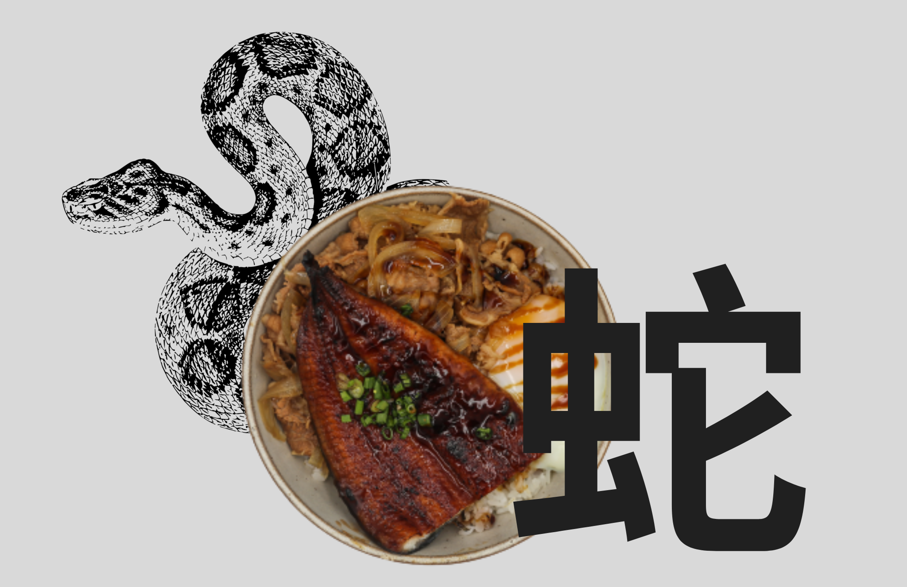

Gyoza do Carneiro

Inspirado pelo signo do Carneiro, conhecido por serem Cautelosos, protetores e obstinados, o Juunishi oferece gyoza de peixes frescos. Esses bolinhos de massa fina são recheados com uma mistura suculenta de peixe-branco, camarão e vegetais picados. São servidos com um molho de mergulho leve e refrescante, destacando os sabores delicados dos frutos-do-mar.
R$40,00
Ramen do Galo

Para o signo de Galo, associado à perfeição e ao equilíbrio, o Juunishi oferece um ramen delicado e harmonioso. Este prato apresenta macarrão artesanal cozido no caldo de missô suave e saboroso, acompanhado de fatias de carne de porco, brotos de feijão, cogumelos frescos e cebolinha, resultando em um equilíbrio perfeito de sabores e texturas.
R$40,20
Sukiyaki do Porco
Sukiyaki é um prato de cozido japonês, com ingredientes variados cozidos juntos em uma panela. A natureza de compartilhar e desfrutar refeições em grupo se assemelha ao preço social e à natureza acolhedora do Porco.
R$55,25
Sushi do Coelho

Um prato que representa o signo de Coelho, pessoas com esse signo são conhecidos por serem sensíveis, puros e simpáticos. Este sushi exclusivo combina ingredientes frescos, como salmão, abacate e pepino, enrolados em uma folha de alga nori. É servido com um molho especial que realça os sabores únicos e cria uma explosão de frescor.
R$75,00
Tempurá do Tigre

Inspirado pelo signo de Tigre, conhecido por sua pela busca de desafios e sonhos idealistas, este prato apresenta camarões e vegetais frescos, mergulhados em uma massa leve de tempura, e fritos até ficarem crocantes e dourados. É acompanhado por um molho agridoce que complementa perfeitamente a textura e o sabor dos ingredientes.
R$65,50
Udon do Boi
O udon, um prato de macarrão grosso servido em um caldo quente, é reconfortante e nutricional, semelhante à resistência e perseverança do Boi no horóscopo chinês. Ambos valorizam a estabilidade e o confor
R$60,00
Unagi da Cobra
A unagi, com sua forma sinuosa e textura tenra, se assemelha a uma serpente. Além disso, ambos são frequentemente associados à mudança e transformação, já que a serpente troca de pele e a enguia é vista como um alimento revitalizante.
R$60,00
Yakisoba do Macaco
O yakisoba, com sua natureza divertida e saborosa, se assemelha à personagem brincalhona do Macaco. Ambos são conhecidos por serem enérgicos, sociais e carregados de animação.
R$70,00